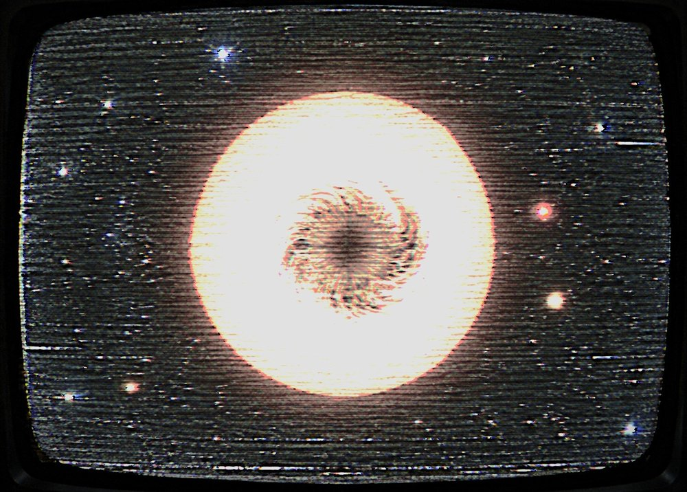

INVESTIGACIÓN Y EXPLORACIÓN ESPACIAL
Comité de Continuidad · Sistema de Información Pública ATLAS-NET
Nuestra empresa llegó al espacio antes que casi cualquiera. Después nos retiramos, y cuando el Sol se apagó durante cuatro décimas de segundo el 17 de julio de 1982, decidimos volver.
Atlas Corporation es la única organización con el historial tecnológico y la infraestructura necesarios para investigar el Apagón desde el espacio. Este terminal contiene la documentación de misión, la historia de la empresa y los materiales de postulación para la Misión HELIOS-1. Si está aquí porque completó la entrevista de evaluación, comience con el resumen de misión a continuación.
*** ABIERTA *** CONVOCATORIA PÚBLICA 1983
Atlas Corporation busca un astronauta y un operador en Tierra para la Misión HELIOS-1. No necesita formación técnica ni experiencia previa. Sólo tiene que seguir instrucciones mientras ocurre algo que no le resulta familiar.
Atlas Corporation no sabe qué causó el Apagón. Nadie lo sabe. Lo que sí sabemos es que, aprovechando una alineación específica entre determinados cuerpos celestes y la Luna, es posible enviar una onda hacia el Sol capaz de alterar temporalmente el fenómeno responsable.
La sonda ATLAS-H no puede operar de manera autónoma. Necesita ser controlada por un ser humano en el espacio y requiere una segunda persona en Tierra que supervise los datos, interprete la información y guíe al astronauta durante la misión. Atlas ya no cuenta con el personal suficiente para realizar la operación. Por eso esta convocatoria es pública.
La misión sigue un cronograma fijo. Se le indicará qué hacer y cuándo. Se le pedirá que describa lo que ve y lo que escucha, en voz alta, de forma continua, durante toda la duración.
"La humanidad creyó que estaba explorando el universo." — Lema institucional, 1961

| MISIÓN HELIOS-1 / CONVOCATORIA PÚBLICA 1983 | |
|---|---|
| Designación | HELIOS-1 (Misión de Intervención Solar) |
| Estado | ACTIVA — convocatoria abierta |
| Vehículo | Sonda ATLAS-H — control tripulado, diseño propio |
| Ventana de lanzamiento | Alineación lunar confirmada — fecha [reservada] |
| Objetivo | Emisión de onda de atenuación hacia el Sol |
| Actividad solar | Perturbación de baja frecuencia — ver NT-1982-011 |
| Firma acústica | █████████ |
| Participantes requeridos | 2 (uno en el espacio, uno en Tierra) |
| Personal propio disponible | ███ |
| Nivel de autorización | B-ESTÁNDAR |
| Intentos de acceso registrados | 000 |
Este monitor es un espejo público diferido. La luz del Sol tarda 8 minutos 20 segundos en llegar a los instrumentos. Todo lo que aparece en él ya ocurrió.
La Misión HELIOS-1 acepta postulaciones individuales o en pareja. Las parejas se postulan juntas y cada una elige un puesto distinto. No necesita formación técnica. Necesita poder seguir instrucciones con precisión mientras ocurre algo que no le resulta familiar.
Se aplican criterios adicionales, que se comunican en la sesión informativa. Atlas no garantiza que ambos miembros de una pareja sean seleccionados. El Índice de Perturbación obtenido en la entrevista es procesado por el equipo técnico y no se comunica al postulante.
A bordo de la sonda ATLAS-H / espacio
Ejecuta los procedimientos directamente desde la sonda según el cronograma de misión. Calibra el emisor de onda, realiza observaciones visuales del Sol, mantiene contacto de voz con el operador en Tierra y describe cada observación en el momento en que ocurre.
El astronauta trabaja solo y puede encontrar condiciones fuera del perfil de misión. Descríbalas. No actúe sobre ellas.
Central de Comando / Complejo Meridian
Supervisa todos los sistemas de la sonda, analiza los datos entrantes, interpreta la información y guía al astronauta durante las diferentes etapas de la operación. Señala los patrones irregulares para su escalado.
El operador en Tierra ve todos los monitores, incluidos aquellos que el astronauta no ve. En ocasiones verá lo mismo que el astronauta, al mismo tiempo.
POSTULARSE Leer el resumen de misión
Índice de /public/docs/helios1/ — 10 archivos, 5 restringidos
| Archivo | Modificado | Tamaño | Acceso |
|---|---|---|---|
| convocatoria_publica.pdf | 1983-03-02 | 412K | abierto |
| resumen_helios1.pdf | 1983-03-02 | 188K | abierto |
| protocolo_seguridad.pdf | 1983-02-20 | 907K | abierto |
| manual_operaciones_sonda.pdf | 1983-04-01 | 1.2M | abierto |
| historia_atlas_1954-1982.pdf | 1983-01-15 | 334K | abierto |
| memo_1982-07-17.txt | 1982-██-██ | 4K | restringido |
| registro_frecuencia_1962.dat | 1962-██-██ | 812K | restringido |
| articulo_kessler_1979.pdf | 1979-██-██ | 1.1M | restringido |
| expediente_medico_portavoz.pdf | 1982-██-██ | 240K | restringido |
| mapa_casos_1982.pdf | [retenido] | 3.6M | restringido |
Los archivos restringidos no forman parte de la convocatoria. Las solicitudes de acceso se registran y se reenvían al Comité de Continuidad. Archivo completo de documentos ›
Atlas Corporation
Copyright © 1983 Atlas Corporation. Todos los derechos reservados. — Sistema de Información Pública v1.4 ALGUNAS SECCIONES EN CONSTRUCCIÓN
REF: PROTOCOLO DE SILENCIO · ARCHIVO 1955–62 · [RESTRINGIDO]
Usted es el visitante 00000000 de este terminal desde agosto de 1982. · ATLAS-NET es un sistema propietario. No es compatible con redes ni equipos de terceros.